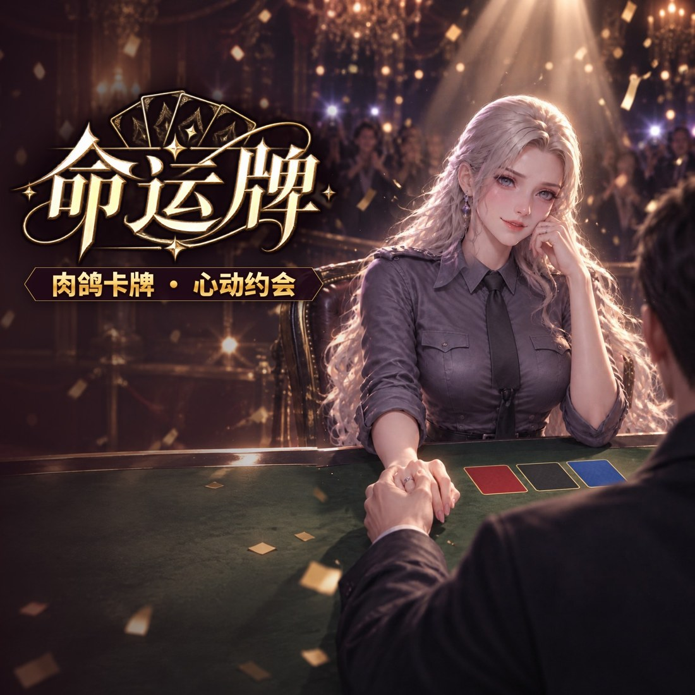
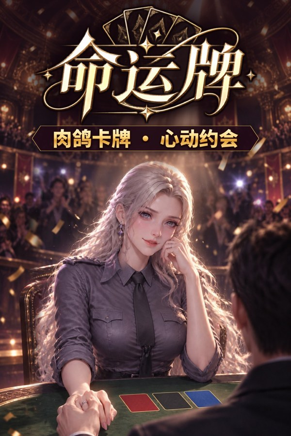
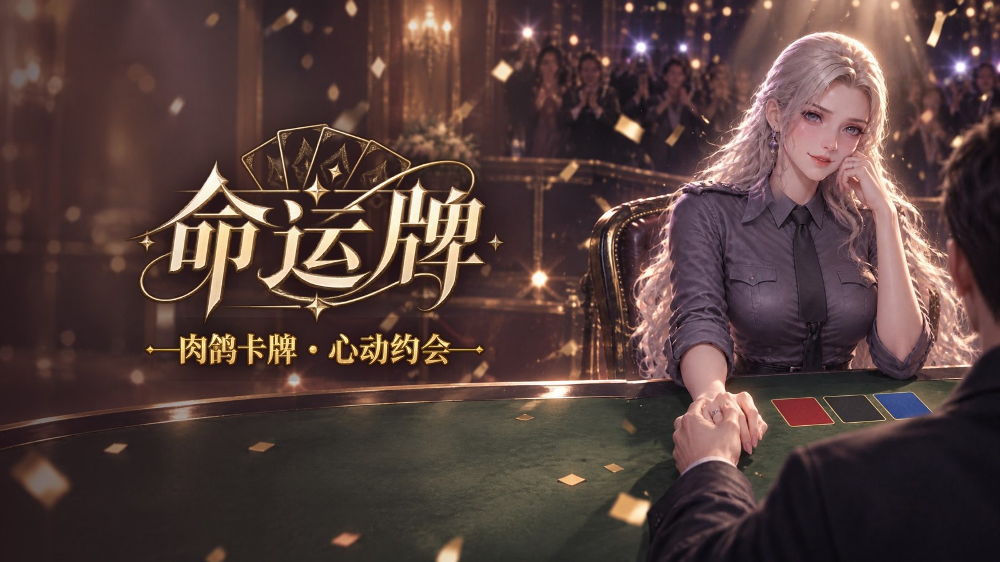
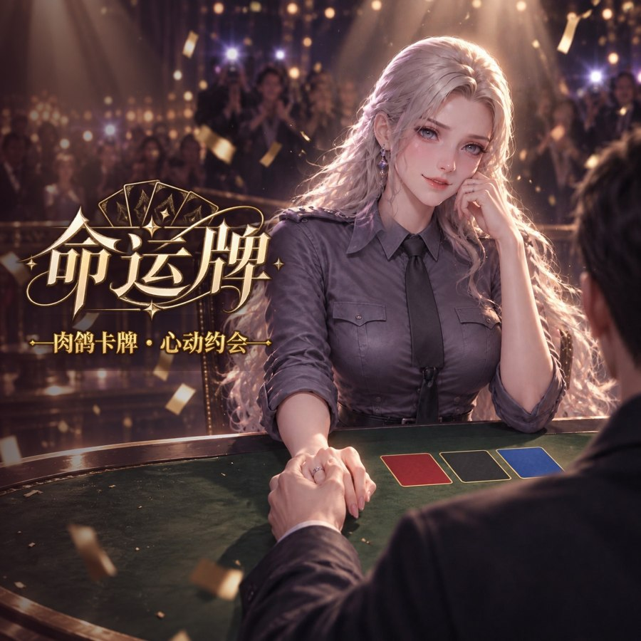
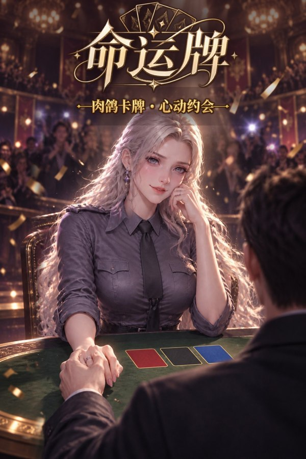

更新：中间方图重新构图——镜头拉远、女主移到右半边，左侧留出干净的暗区放字标，字标和女主之间留足空隙，不再压到头发和肩膀；字标放大约 27%，占满左侧暗区。
· 「命运牌」字标更大、提亮，加粗深色描边和暗底，亮背景上也能一眼看清
· 副标题改成粗体实体字＋深色缎带底（风格还是金色），小图也看得清；顺带把「鸽」改成了简体（上一版 AI 写成了繁体「鴿」）
· 竖版：画面往上扩了一截，女主整体下移，字标在她头顶上方，不挡头；下面男主肩膀裁掉一些
· 字标都在画面中间 4:3 安全区内


商店列表里的小图效果（缩到实际显示大小）：


